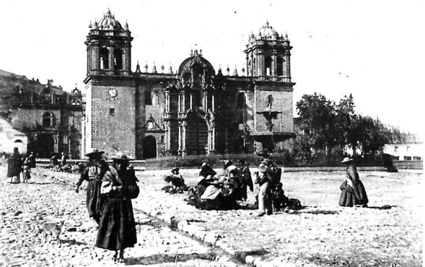

Los reyes incas, hijos del Sol, gobernaron un vasto imperio, el Tahuantinsuyo, cuyo centro era Qosqo, que significa "ombligo". Y esta ciudad era, verdaderamente, el centro del imperio, desde el cual partían los caminos que llevaban a las cuatro "partes del universo".
Dos son las leyendas sobre la fundación de Cusco y ambas se basan en un viaje mítico.
La primera leyenda tiene como protagonistas a Manco Cápac y Mama Ocllo, hijos de Inti, el dios Sol, y Quilla, la diosa Luna. Los hermanos partieron de la Isla del Sol, en el lago Titicaca, en busca de un lugar para fundar una ciudad. El lugar elegido fue aquel donde la vara de oro que llevaban consigo se clavó en la tierra de un solo golpe.

En la segunda leyenda los protagonistas son cuatro hermanos, compañeros de cuatro hermanas: Mama Guaco y Ayar Cachi, Mama Cora y Ayar Uchu, Mama Rawa y Ayar Aucca, Mama Ocllo y Ayar Manco. Ellos sobrevivieron al diluvio provocado por Wiracocha y salieron de unas cuevas en Pacaritambo, en el cerro Tampu Tocco, para repoblar la Tierra.
Por distintas circunstancias, tres de los hermanos abandonaron el viaje antes de llegar a destino. Sólo Mama Ocllo y Ayar Manco siguieron viajando hasta encontrar el lugar en que la vara de oro que les había dado Wiracocha se hundió en la tierra.
Manco se valió de sus habilidades y enlazó al sol para que no se pusiera, creando así la ciudad en un solo día. La ciudad se llamó Qosqo y la roca desde la cual enlazó al sol, en Machu Picchu, fue bautizada como Intihuatana.
En el centro de la nueva ciudad, diseñada con forma de puma yacente, Manco erigió un templo en honor del dios Sol y rodeó la ciudad de montañas, para protegerla del viento, dominado por su hermano Ayar Aucca. También organizó los primeros sembradíos de maíz. Ayar Manco cambió su nombre a Manco Capac. Es considerado el primer Inka, es decir, el primer rey del imperio.